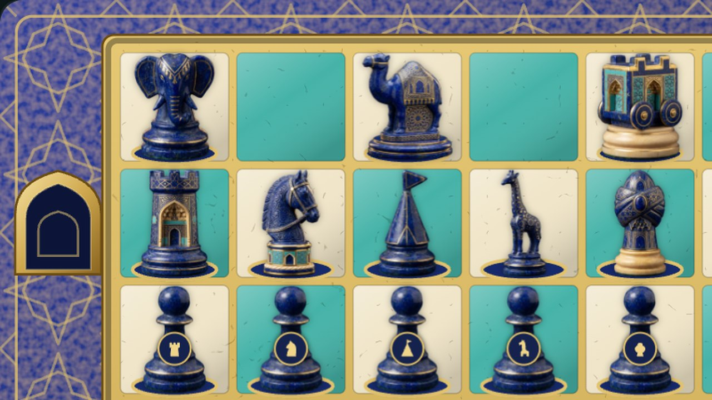

Kaleler
Oyunun sonunu değiştiren iki çıkıntılı kare: rakibin kalesine ulaşan şah oyunu kurtarır.

Büyük satranç tahtasında iki çıkıntı — kale — vardır, her oyuncuya bir tane, karşılıklı kenarlarda. Fikir büyük satrançtan da eskidir: Orta Çağ el yazmalarında tahtada dört köşe kalesi olan «kaleli oyun», şatranc el-husûn anlatılır.
Büyük satrançta kale şahın son umududur. Sıkıştırılan tarafın şahı rakibin kalesine ulaşırsa oyun berabere biter. Bu yüzden çıplak şah henüz yenilmemiştir: rakibin kalesine giden bir yolu olduğu sürece oyun sürer.
Kendi kalesine yalnız «arızi şah» — piyonların piyonunun üçüncü dönüşümünden doğan taş — girebilir. Orada dokunulmazdır ve rakibin berabereyle kurtulmasına izin vermez.
Kale kuralları kaynaklarda farklı anlatılır ve çağdaş yeniden kurgular ayrıntıda ayrışır. Bizim oyunumuzda bunlar «Kurallar» bölümünde toplanmıştır.